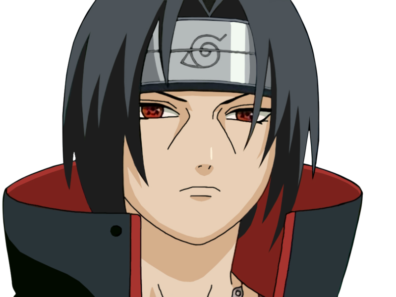
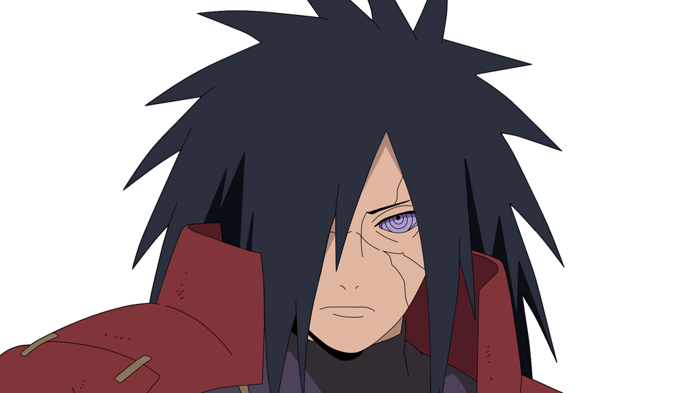
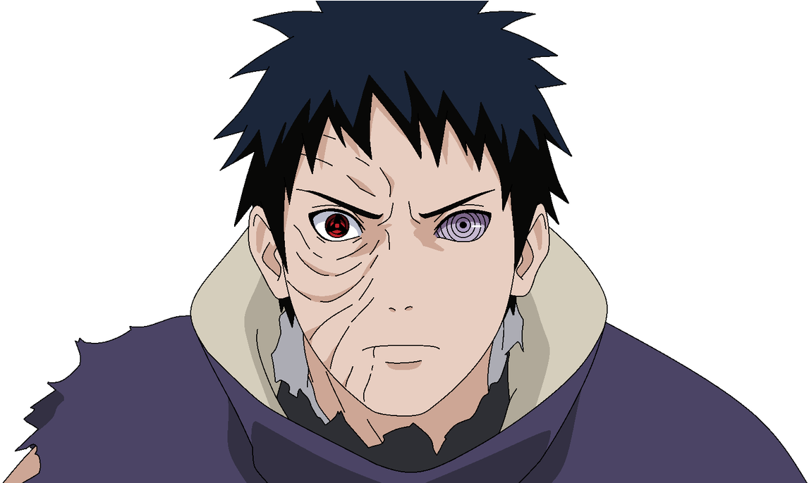
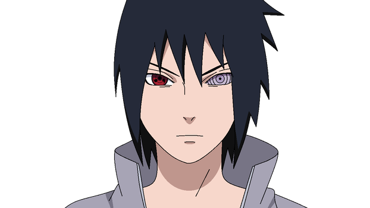

| Uchiha Itachi was a shinobi of Konohagakure's Uchiha clan who served as an Anbu Captain.
one night Itachi and Tobi slaughtered the entire clan.

Itachi took it upon himself to
personally execute his parents. Despite his betrayal, they bore him no ill-will, instead telling him
in the moments before they were killed that they were proud of him and requesting that he take care of Sasuke. |
Madara was one of the most powerful shinobi in history,
recognised as the strongest Uchiha ever produced even decades after his death.Even by Uchiha standards,
Madara was born with very powerful chakra,[43] described as very foul and evil.  This is
partly because he inherited Indra's chakra.[62]
His large chakra reserves allowed him to fight nonstop for 24 hours before collapsing,[63] and in his old age,
summon the Demonic Statue of the Outer Path from its cage in the moon.
|
As a genin, Obito's abilities were average at best, struggling to match his classmates from the Academy. Determined to 
improve himself, he trained for several months at a time to eventually become a chūnin. Madara saw great potential in Obito and thus selected him as his disciple
|
Fugaku taught Sasuke how to perform the Great Fireball Technique, which he mastered in a week.
Fugaku stated his pride in Sasuke for this accomplishment, but at the same time encouraged him not to follow in Itachi's footsteps. 
After his final encounter with reincarnated Itachi, between learning of Itachi's struggles in life and knowing that
Itachi made the choice willingly to become the villain for the sake of peace, Sasuke is left uncertain about what course to take.
|